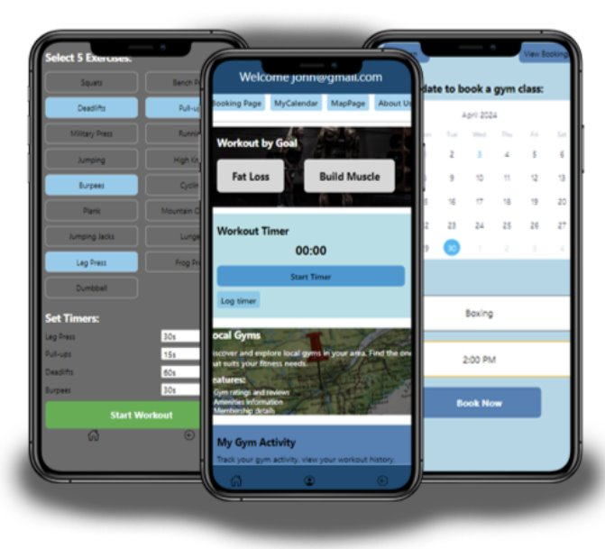

Dissertation · Mobile app01
ClubTime — sports club management
A React and Firebase mobile app designed to bring bookings, personal training schedules, fitness plans, and meal tracking into one place for sports clubs and their members.
- React
- Firebase
- Authentication
- Real-time data